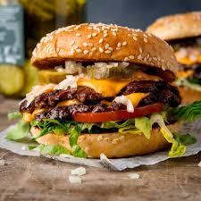

Burger

Home
Burger Recipe
To make the patty, mix ground beef (500g) with salt, pepper, garlic powder, and a little Worcestershire sauce. Shape into round patties about 2cm thick and cook on a hot pan or grill for 3-4 minutes each side until nicely browned. Add a slice of cheese on top in the last minute and let it melt.
Toast your burger buns lightly in the same pan. Then build your burger: bottom bun, lettuce, tomato slice, the cheesy patty, pickles, onion, and your sauces (ketchup, mustard, mayo). Put the top bun on and serve immediately with fries on the side.
Ingredients:
- Ground beef (500g)
- Salt,peper,garlic powder
- Worcestershire sauce
- Cheese slices
- Burger buns
- Lettuce
- Tomato slices
- Pickles
- Onion
- Ketchup, mustard, mayo
Steps:
- Mix ground beef with salt, pepper, garlic powder, and Worcestershire sauce.
- Shape into round patties about 2cm thick.
- Cook on a hot pan or grill for 3-4 minutes each side until nicely browned. Add a slice of cheese on top in the last minute and let it melt.
- Toast your burger buns lightly in the same pan.
- Build your burger: bottom bun, lettuce, tomato slice, the cheesy patty, pickles, onion, and your sauces (ketchup, mustard, mayo).
- Put the top bun on and serve immediately with fries on the side.